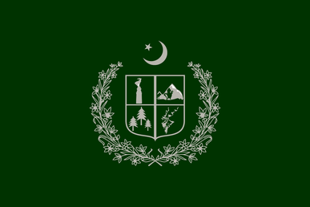
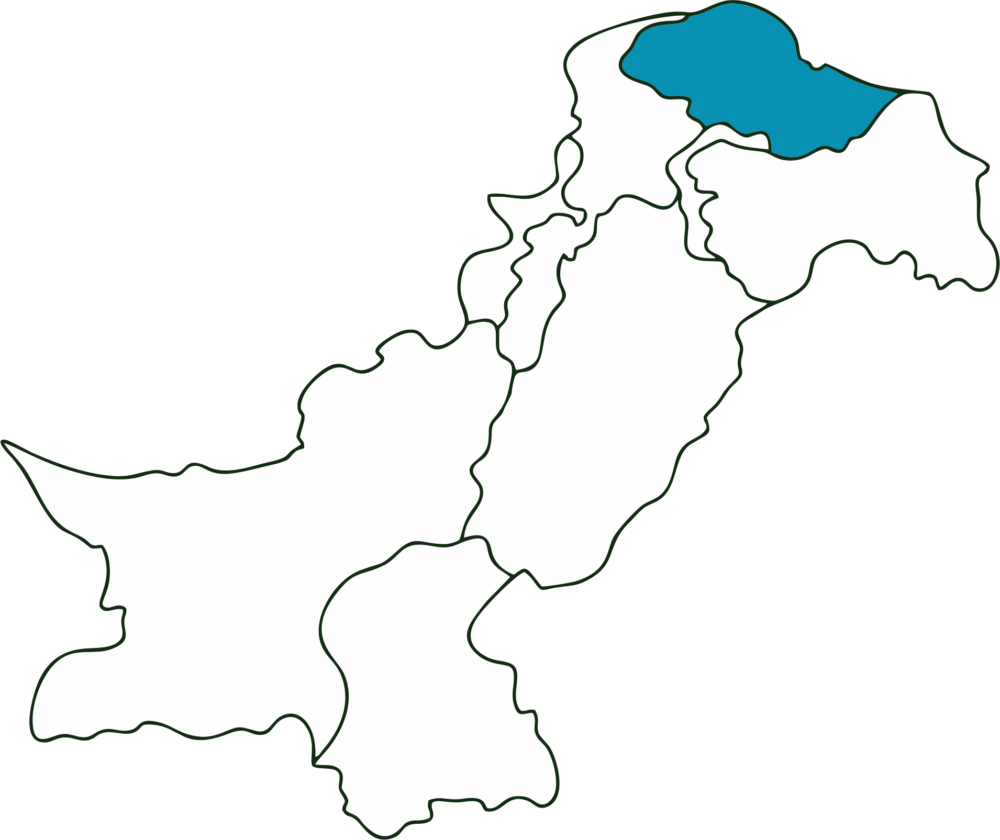

Flag
Emblem

Location

Overview
Paradise on Earth
Gilgit-Baltistan is the meeting point of the world's three highest mountain ranges: the Himalayas, the Karakoram, and the Hindu Kush. It is a mountaineer's paradise.
Historically part of the Silk Road connecting China to the subcontinent, it is home to diverse cultures and languages like Shina, Balti, and Burushaski speakers.